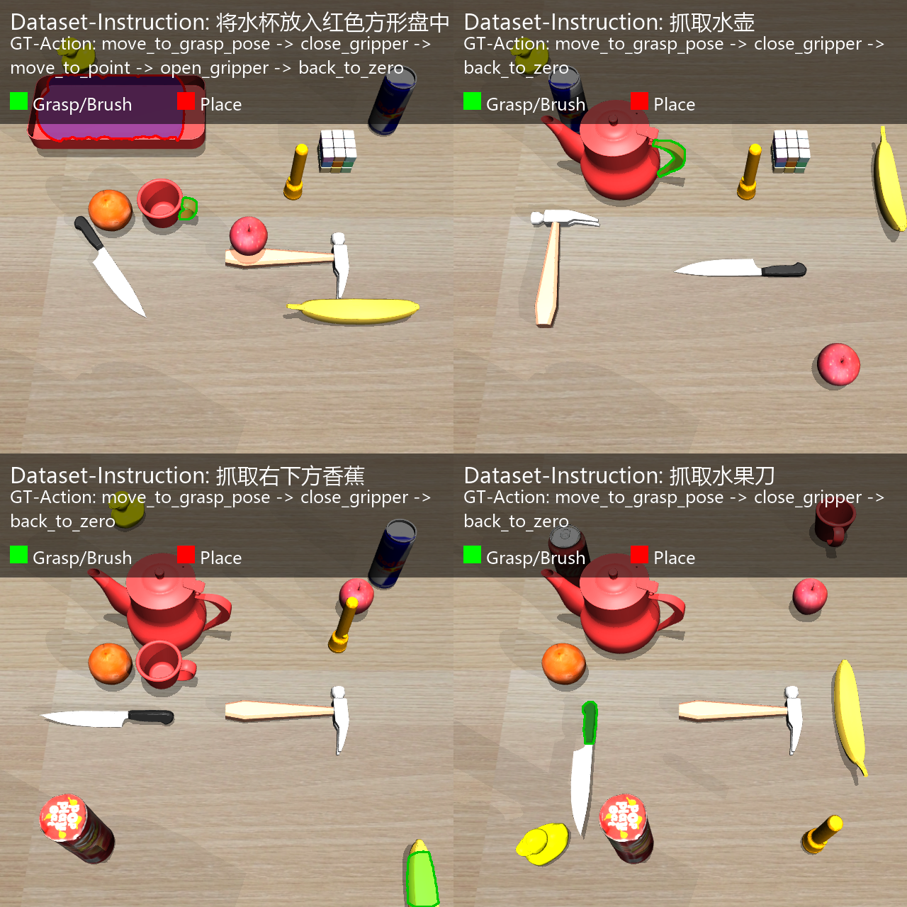
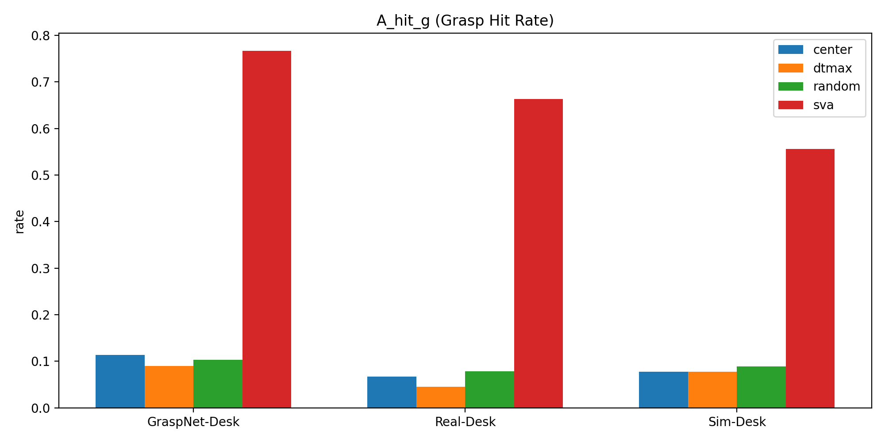
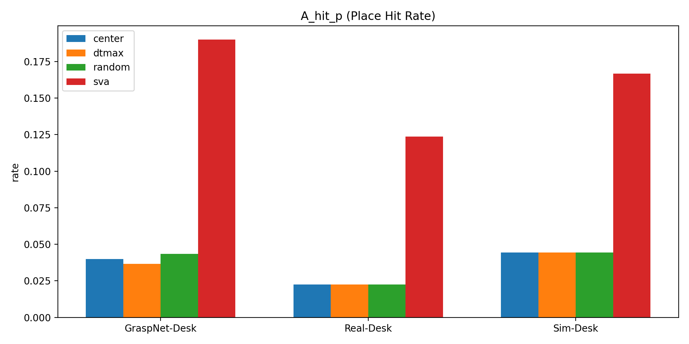
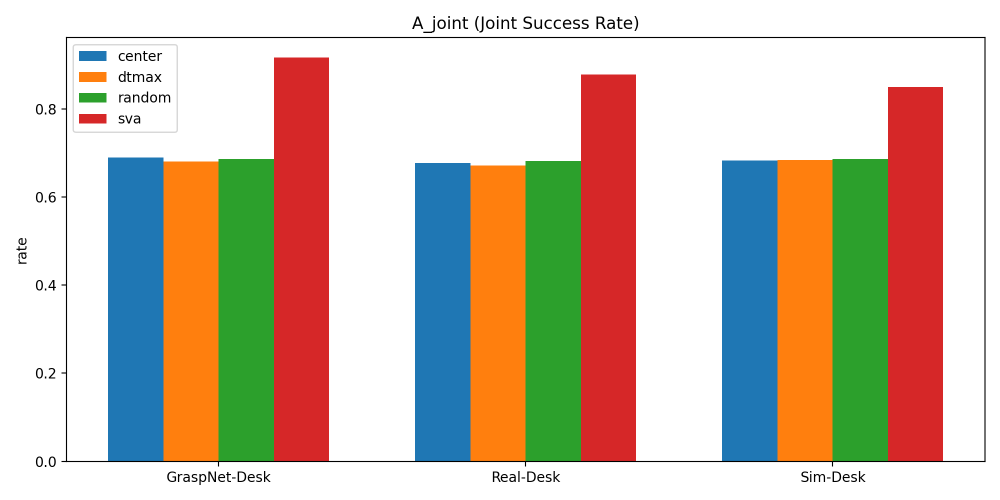
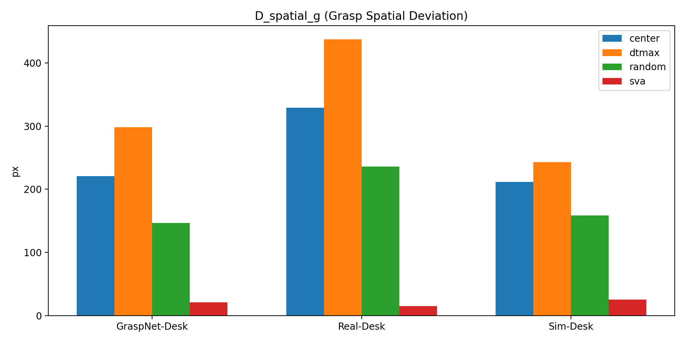
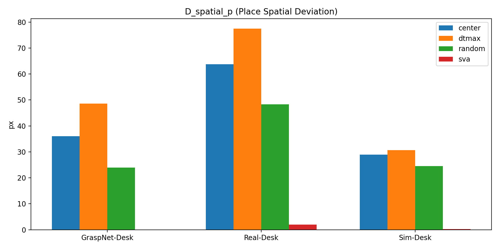

基于视觉提示的具身智能空间感知增强方法研究
论文补充主页：对齐论文中的数据、方法、实验与结果，并提供开源代码与复现入口。
1. 项目目录
- vlm-spatial-grasp：论文主方法工程（SVA + SVP + 闭环抓取执行）。
- paper_release：论文数据、标注工具、对比实验脚本、主结果表格与图表。
代码入口： vlm-spatial-grasp | paper_release
2. 数据集说明（与论文对齐）
主评测数据：paper_release/data/dist_all（160 个样本）。
- 0-99：GraspNet-Desk
- 100-129：Real-Desk
- 130-159：Sim-Desk

GraspNet-Desk（0-99）样例

Real-Desk（100-129）样例

Sim-Desk（130-159）样例
3. 论文实验映射
| 论文表号 | 含义 | 脚本 | 输出 |
|---|---|---|---|
| 表3-2 | 三域数据规模统计 | 按 dist_all 前缀区间统计 | 数据划分口径 |
| 表3-4 | 三域静态评估（命中率/偏差） | paper_release/experiments/table3_3.py | results/tables/table3_3_ai_results*/summary.csv |
| 表4-1 | Full（Oracle-Action）主对比 | paper_release/experiments/table4_1.py | table4_full.csv / table4_full_recomputed.csv |
| 表4-2 | Strict（Supplementary）一致性评估 | paper_release/experiments/table4_2.py | table4_2_strict.csv / table4_2_strict_recomputed.csv |
说明：table3_3.py 是历史脚本名，用于当前论文表3-4对应评估。
4. 结果图（表3-4对应）

A_hit_g（抓取命中率，越高越好）

A_hit_p（放置命中率，越高越好）

A_joint（联合一致性，越高越好）

D_spatial_g（抓取偏差 px，越低越好）

D_spatial_p（放置偏差 px，越低越好）
5. 复现入口
- 批量推理（方法对比）：paper_release/experiments/*.py
- 主表评估：table3_3.py / table4_1.py / table4_2.py
- 交互执行入口：vlm-spatial-grasp/main_vlm.py